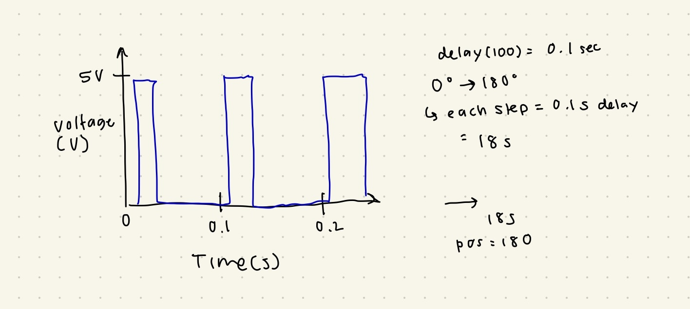

Here is all the documentation for assignment 4:
#include
#include
const int RECV_PIN = 2; // IR receiver pin
const int SERVOPIN = 3; // Servo signal pin
Servo myServo;
void setup() {
// begin serial monitor
Serial.begin(9600);
// delay for easier reading
delay(500);
// prompt
Serial.println("Click buttons 1 – 9 for 20° increments!");
// set up IR remote
IrReceiver.begin(RECV_PIN, ENABLE_LED_FEEDBACK);
// connect servo to my pin
myServo.attach(SERVOPIN);
// start at 0 degrees
myServo.write(0);
}
void loop() {
if (IrReceiver.decode()) {
// recieve the IR code
int code = IrReceiver.decodedIRData.command;
// default (no change)
int angle = -1;
if (code == 0x16) angle = 0; // Button 0
else if (code == 0xC) angle = 20; // Button 2
else if (code == 0x18) angle = 40; // Button 2
else if (code == 0x5E) angle = 60; // Button 3
else if (code == 0x8) angle = 80; // Button 4
else if (code == 0x1C) angle = 100; // Button 5
else if (code == 0x5A) angle = 120; // Button 6
else if (code == 0x42) angle = 140; // Button 7
else if (code == 0x52) angle = 160; // Button 8
else if (code == 0x4A) angle = 180; // Button 9
// if angle is changed, print to serial monitor
if (angle != -1) {
myServo.write(angle);
Serial.print("Moved to ");
Serial.print(angle);
Serial.println("°");
}
// receive the next code
IrReceiver.resume();
}
}
1.
2.I did some searching online about how to deal with bad/unreliable sensor readings, and I found it is helpful to average readings or to weed out outliers.
// average pseudocode:
int total = 0;
for (int i = 0; i < 10; i++) {
total += readSensor();
}
int average = total / 10; // use average value
// outlier removal pseudocode:
reading = readSensor();
if (reading < min || reading > max) {
// bad reading, ignore it
reading = previousReading;
}
3. Similar to the previous example, averaging the readings would be helpful for this issue.
4. In this assignment, I used chatGPT for the "code learning" sketch I used to find my IR remote codes. I also used to to debug, and to switch to updated v4.x IR code because I was previously using an older version which was in the spark fun tutorial. I also used it to review concepts relevant to the additional questions.
// I used this code before my IR and Servo code, to find my remote's codes.
// ChatGPT prompt: How do I find the codes for my IR remote? -> Given error message:
#include // note: new include format
// Pin where your IR receiver’s OUT pin is connected
const int RECV_PIN = 2;
void setup() {
Serial.begin(9600);
Serial.println("IR Receiver Ready – press buttons on your remote");
IrReceiver.begin(RECV_PIN, ENABLE_LED_FEEDBACK); // start receiver
}
void loop() {
// Check if an IR signal has been received
if (IrReceiver.decode()) {
// Print the raw IR code in HEX
Serial.print("IR code: 0x");
Serial.println(IrReceiver.decodedIRData.command, HEX);
// Print some extra info (optional)
Serial.print("Address: 0x");
Serial.print(IrReceiver.decodedIRData.address, HEX);
Serial.print(" | Protocol: ");
Serial.println(IrReceiver.decodedIRData.protocol);
IrReceiver.resume(); // ready to receive next signal
}
}